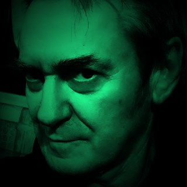
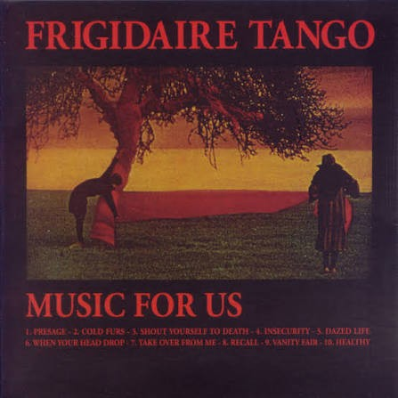
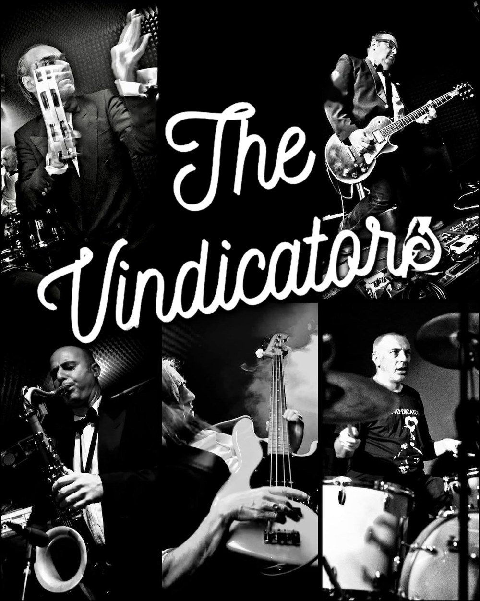

Modern Vintage Wave
10 brani inediti 2008–2025
Dieci brani scelti tra una trentina registrati negli ultimi quindici anni, in italiano e in inglese. Include i singoli "Fears" e "Non sei raggiungibile" e un omaggio ad Adrian Borland dei The Sound. Pubblicato da Psicolabel, 2026.
Brani
- I creatori
- Non sei raggiungibile
- Timeless Future
- Life Is a Little Trip
- Deadline Body
- Fears
- Bloody Glory
- Adrian
- L'ombra della tua grazia (Adrian Borland)
- Considerations
Dettagli
- Etichetta
- Psicolabel
- Anno
- 2026
- Formati
- LP in vinile, CD e digitale
- N. cat. vinile
- PL00FT2025
Dove acquistarlo
Disponibile anche in CD e su tutti i principali store digitali. Ascoltalo su Spotify o Deezer qui sopra.
Contatti
Email info@frigidairetango.com · Instagram · Facebook

Frigidaire Tango



Una delle prime band new wave italiane. Esordio nel 1981, ultimo concerto nel 1986, di nuovo insieme dal 2005.
Ultime notizie
Tutte le news →

I brani più ascoltati dei Frigidaire Tango di sempre
Dati di Spotify e Deezer uniti: in testa ai primi 7 c'è Recall. E il tuo brano preferito qual è?
Vedi la classifica →

The Fleshtones a Pordenone con The Vindicators
Sabato 31 ottobre al Capitol di Pordenone, per i 50 anni dei The Fleshtones. Aprono The Vindicators, con Charlie Out e Stewie DC.
Leggi la notizia →


Sala piena a Bassano
La Libreria Palazzo Roberti si è riempita per la presentazione del libro di Carlo Casale e la serata è proseguita al Pick Up Records con il nuovo album.
Leggi il reportage →Recall è il n° 1! Il brano più ascoltato di sempre dei Frigidaire Tango. Ecco la nostra Top 7!
Dati combinati di Spotify e Deezer: ascolta qui ogni brano, senza lasciare la pagina.
- 1RecallMusic for usYouTube100Indice combinato26.310Spotify ascolti33.917Deezer rank
- 2Any Time You Dress So FineThe CockYouTube69Indice combinato13.728Spotify ascolti28.775Deezer rank
- 3New Wave AnthemL'illusione del voloYouTube58Indice combinato9.387Spotify ascolti27.132Deezer rank
- 4Blue & PinkThe Cock52Indice combinato4.033Spotify ascolti29.996Deezer rank
- 5I creatoriModern Vintage WaveYouTube35Indice combinato1.552Spotify ascolti21.829Deezer rank
- 6FearsModern Vintage WaveYouTube35Indice combinato1.225Spotify ascolti22.037Deezer rank
- 7Dangerous EchoThe CockYouTube22Indice combinato7.255Spotify ascolti5.444Deezer rank
E tu, qual è la tua canzone preferita?
Esplora
Storia
Dagli Outkids nel 1977 a Modern Vintage Wave.
Open →La band
Nomi d'arte, nomi reali e chi ha suonato nei dischi.
Open →Discografia
La discografia, da The Cock a oggi.
Open →Video
I Creatori, i promo del 1983 e il documentario RAI.
Open →Foto
Foto stampa e la serata di presentazione.
Open →Stampa
Recensioni e interviste, con i link alle fonti.
Open →Risposte rapide
La band in breve
Chi sono i Frigidaire Tango?
I Frigidaire Tango sono una band new wave di Bassano del Grappa. Carlo Casale e Stefano Dal Col la fondarono nel luglio 1977 come Outkids; con l'aggiunta di sax e tastiere divenne Trash e, all'alba degli anni Ottanta, Frigidaire Tango.
Qual è stato il primo album dei Frigidaire Tango?
Il primo LP è The Cock, uscito nel 1981 per Young Records. Nel 2010 la rivista francese Tsugi lo ha inserito tra i 100 LP rock meno noti essenziali.
Quando si sono sciolti e riuniti i Frigidaire Tango?
L'ultimo concerto è stato nel luglio 1986 sulle mura di Treviso. Il cofanetto The Freezer Box (Alma Records, 2006–07) ha riportato in vita il vecchio materiale e la band ha ripreso a suonare. L'illusione del volo (2009) è il loro primo album in italiano.
Qual è l'ultimo album dei Frigidaire Tango?
Modern Vintage Wave, uscito nel 2026 per Psicolabel.